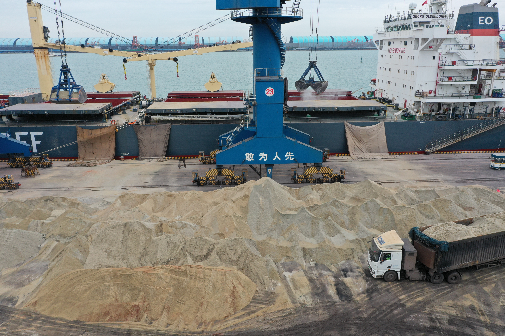

Fuel and Freight Costs Are Rising Together: Why Cement Producers Are Turning to SCM Strategy
Indian and Asian cement producers face a 10-12% increase in power and fuel costs and 6-8% higher selling costs in 2026-27. With crude prices elevated and freight rates firm, the industry is under margin pressure. Supplementary cementitious materials are becoming a structural lever to cut both cost and clinker dependence.
燃料与运费齐涨：水泥企业为何正在转向 SCM 战略
2026-27财年，印度及亚洲水泥生产商面临电力与燃料成本上涨 10-12%、销售成本上涨 6-8% 的双重压力。在原油价格高企、运费坚挺的背景下，补充胶凝材料正成为降低熟料依赖和成本的结构性杠杆。
The cement sector in India and across Asia is entering a cost squeeze that looks less like a temporary cycle and more like a sustained operating environment. According to recent industry assessments, power and fuel costs are projected to rise 10-12% in the 2026-27 period, while selling expenses — driven by higher freight and packaging outlays — could climb another 6-8%. Add to that the ongoing West Asia conflict, which has pushed crude prices higher and injected further uncertainty into energy and logistics markets, and the sector faces what analysts are calling a 'perfect storm' for margins.
1. The cost stack is under pressure from every direction
Cement manufacturing is inherently energy-intensive. Kiln operations depend on petcoke, thermal coal, and coking coal, all of which have seen above-normal price increases. The fuel price revision triggered by the West Asia conflict is expected to escalate costs further, intensifying pressure on companies already grappling with elevated raw material prices. In response, Indian producers initiated price hikes of Rs 10-12 per bag in April 2026. But the extent of cost pass-through remains contingent on demand-supply dynamics, and in competitive markets not every producer has the pricing power to recover the full increase. For export-oriented or import-dependent markets, the calculus is even harder.

2. SCM is moving from sustainability option to cost-control necessity
For years, supplementary cementitious materials have been promoted primarily for their carbon-reduction credentials. Slag, fly ash, and pozzolans lower the clinker factor in cement, which directly reduces both CO2 emissions and thermal energy consumption per tonne of finished product. In a normal cost environment, that was a welcome bonus. In the current environment, it is becoming a financial necessity. Every percentage point of clinker replaced by ground granulated blast furnace slag (GGBFS) or quality fly ash removes a corresponding share of kiln fuel demand from the cost base. As energy prices stay elevated, the economic case for SCM substitution strengthens regardless of green-building mandates or carbon regulations.

3. What this means for international material suppliers
The cost pressure on cement producers translates into demand-side opportunity for suppliers of consistent, bulk-quality SCM. Markets that previously viewed GBFS or fly ash as niche alternatives are now recalculating their procurement priorities. The growing global GGBFS market — projected to expand from USD 20.7 billion in 2024 to USD 36.0 billion by 2034 — is not only a sustainability story; it is a cost-management story. For producers in China, India, and Southeast Asia with access to stable blast-furnace slag or quality fly ash, the current margin squeeze in finished cement means their customers have both the incentive and the urgency to increase SCM blending ratios. The question is no longer whether to substitute clinker, but how quickly the supply chain can scale to meet that substitution demand.
The near-term cost shock may fade, but the structural shift it accelerates will not. Cement producers that integrate SCM strategy into their core procurement and product planning will be better positioned regardless of where fuel and freight prices settle. For suppliers, this is a clear signal: reliability, consistency, and bulk availability are the currencies that matter now.
印度及亚洲各地的水泥行业正进入一轮成本挤压，这看起来更像是一种持续的经营环境，而非暂时性周期。据近期行业评估，2026-27财年电力与燃料成本预计上涨 10-12%，而受运费和包装支出走高的推动，销售费用可能再增 6-8%。叠加西亚冲突持续推高原油价格、给能源和物流市场注入更多不确定性，该行业正面临分析师口中利润率的“完美风暴”。
1. 成本结构正从各个方向承压
水泥制造本质上属于高能耗产业。窑炉运行依赖石油焦、动力煤和炼焦煤，而这些原料价格均已出现超常上涨。由西亚冲突引发的燃料价格调整预计将进一步推高成本，加剧本已疲于应对原材料高价的企业压力。作为回应，印度生产商在 2026 年 4 月已将每袋水泥提价 10-12 卢比。但成本转嫁的程度仍取决于供需动态，在竞争激烈的市场中，并非所有生产商都具备定价能力来完全消化涨幅。对出口导向型或依赖进口的市场而言，成本核算更加困难。
2. SCM 正从可持续选项转变为成本控制刚需
多年来，补充胶凝材料的推广主要基于其降碳属性。矿渣、粉煤灰和火山灰可降低水泥中的熟料系数，从而直接减少每吨成品的水泥 CO2 排放和热能耗。在正常成本环境下，这是一种受欢迎的额外收益。而在当前环境中，它正在变成一种财务刚需。每一百分点被磨细高炉矿渣粉（GGBFS）或优质粉煤灰替代的熟料，都会从成本基数中移除相应比例的窑炉燃料需求。只要能源价格维持高位，SCM 替代的经济性就会持续增强，无论绿色建筑规范或碳排放法规是否加码。
3. 对国际材料供应商意味着什么
水泥生产商的成本压力，转化为对稳定、大宗品质 SCM 供应商的需求侧机遇。那些过去将 GBFS 或粉煤灰视为小众替代方案的市场，正在重新核算其采购优先级。全球 GGBFS 市场预计从 2024 年的 207 亿美元增长至 2034 年的 360 亿美元——这不仅是可持续性的故事，更是成本管理的故事。对中国、印度及东南亚等地能够稳定获得高炉矿渣或优质粉煤灰的生产商而言，成品水泥当前的利润率挤压意味着他们的客户既有动机也有紧迫感去提高 SCM 掺配比例。问题已不再是是否要替代熟料，而是供应链能以多快的速度扩产以满足这种替代需求。
短期成本冲击可能会消退，但它加速的结构性转变不会。那些将 SCM 战略融入核心采购与产品规划的水泥生产商，无论燃料与运费价格最终企稳于何处，都将处于更有利的位置。对供应商而言，这是一个明确的信号：可靠性、一致性和大宗供应能力，才是当下最重要的硬通货。
Explore products or discuss your inquiry.
If this market signal is relevant to your sourcing plan, you can review our core product pages or contact us with laycan, quantity, target specification and loading method.
Request a quote